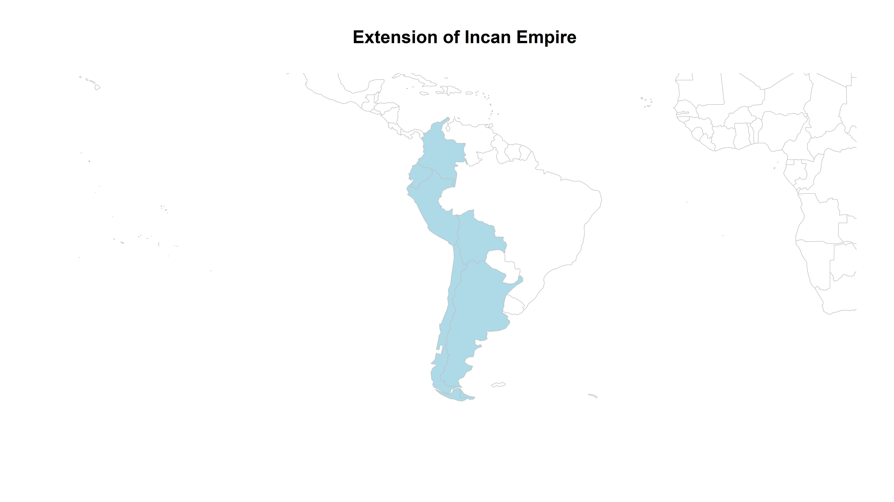
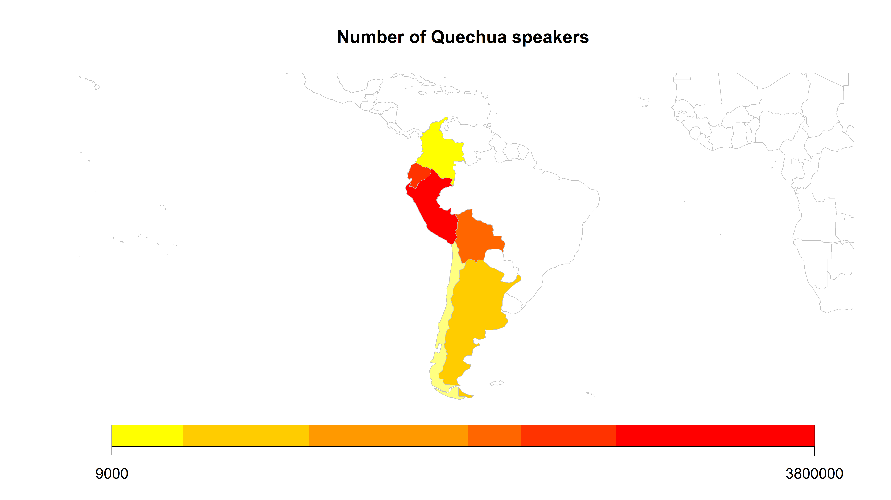
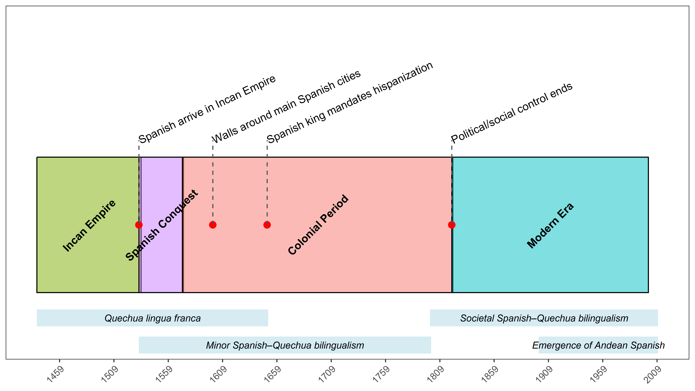
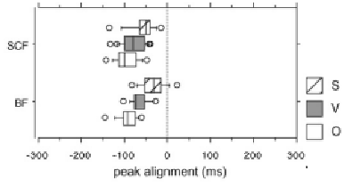
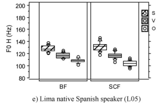
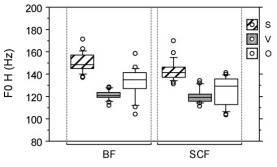
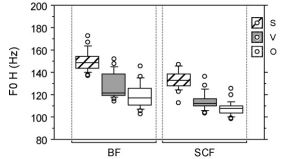
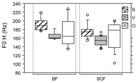

Quechua-Spanish Contact
Eva Corregidor and Robert Esposito
Rutgers University
2026-03-12
The Basics
What are we talking about today?
History of Quechua-Spanish Contact (Escobar, 2011)
An overview of general contact phenomena (Escobar, 2011)
Contrastive focus in two Peruvian varieties (O’Rourke, 2012)
Morphosyntactic contact-induced change in Spanish (Sánchez, 2004)
History of Quechua-Spanish Contact

- Incans conquered much of western South America from the 13th to 16th century
- Quechua became lingua franca, in contact with many languages, among them Aymara
- Incan elites spoke extinct Puquina language
Spanish Conquest in Western South America

Modern Language Policies

Andean Spanish Outside of the Andes

- Large Quechua-speaking population in Queens & Brooklyn in NYC
- Large Quechua-speaking population in Patterson, NJ
- Largest Peruvian percentage in the U.S. per capita!
https://languagemap.nyc/
https://web.archive.org/web/20150201040607/http://www.utsandiego.com/news/2011/may/28/some-ny-immigrants-cite-lack-of-spanish-as-barrier/
Paerregaard (2008)
Let’s listen to two varieties
- Anything that catches your attention?
General Contact Phonema
Andean Spanish
- a Spanish variety primarily spoken in the Andean region of various countries spoken by…
- monolingual speakers- 2L1 bilinguals - L1 Quechua or L1 Aymara L2 Spanish speakers- daily contact with L2 Andean Spanish speakers
- contact with non-Andean varieties of Spanish
Let’s review some terminology…
In groups, define the following terms and be prepared to share a specific contact example
- Source language
- Recipient language
- Agentivity
- Imposition
- Borrowing
The Lexicon
| huayco - mud slide | palta - avocado | ñano - male child | cuy - guinea pig | pisco - grape brandy | zapallo - squash |
| condor - condor | caracha - skin infection | quinua - quinoa | tambo - small inn | ojota - sandal | choclo - corn |
| pampa - plateau | guagua - infant | charqui - dried meat | puna - high altitudes | alpaca - alpaca | carpa - tent |
| canchita - popcorn | soroche - altitude sickness | pucho - cigarette butt | papa - potato | caucho - rubber | concho - sediment |
| quena - quena | chancar - to flatten | cancha - large outdoor space | calato - naked | puma - puma | chakra - ranch |
Escobar (2011)
The Segmental Inventory of Cusco Quechua
| Category | Bilabial | Alveolar | Post.alv..Palatal | Velar | Uvular | Glottal |
|---|---|---|---|---|---|---|
| Nasal | m | n | ɲ | |||
| Stop/Affricate (plain) | p | t | tʃ | k | q | |
| Stop/Affricate (aspirated) | pʰ | tʰ | tʃʰ | kʰ | qʰ | |
| Stop/Affricate (ejective) | pʼ | tʼ | tʃʼ | kʼ | qʼ | |
| Fricative | s | ʃ | h | |||
| Semivowel | j | w | ||||
| Liquid (lateral) | l | ʎ | ||||
| Liquid (rhotic) | ɾ |
https://en.wikipedia.org/wiki/Cusco_Quechua
Let’s take a listen…
Typology
Quechua is agglutinative; Spanish is fusional
Quechua likes to add suffixes to express meaning, sort of like Spanish, but there’s usually a one-to-one correspondence of morpheme-to-meaning
Spanish
aún estoy com iendo
Quechua
mikhu chka ni raq mi
Morphosyntactic Features
Present example sentences for conditional in protasis/apodosis of conditional sentences Skip omission of third person object clitics. Animate leísmo Frequent use of diminutive on nouns, adj, gerunds, numerals, adverbs, pronouns. use for modesty, deferential courtesy. redundant direct object clitics with nominal referent. presence of possesssive determiner with genitive phrase.
Typology
- Quechua is sov; Spanish is sov
Spanish
nosotros comemos carne
Quechua
ñuqanchik aychata mikhunchik
Patterns of Use
Usqhaylla phawarqayku
We ran quickly
Kimsa horatam mikunchik
We eat at three o’clock
- What might Andean Spanish speakers produce?
Discuss…
- According to [generativist/usage-based] theories, changes in patterns of use is reflective of language change
- What motivates the generativist belief that patterns of usage is not reflective of language change?
- What motivates the usage-based belief that patterns of usage is reflective of language change?
Pragmatics in Contact (O’Rourke, 2012)
Pasto, Colombia
Discuss…
- Define and give an example of broad focus and contrastive focus
- What are some linguistic strategies to express contrastive focus in Spanish and Quechua?
- Based on the Maximize Common Ground (Hawkins & Filipović, 2024) principle, what hypotheses can we make about expressing contrastive focus in Andean Spanish?
- Who are the participants?
- Why were these participants chosen?
Draw…

- On a piece of paper, write the above sentence twice.
- Demonstrate what a change in peak height would look like on the verb.
- Demonstrate what a change in peak aligment would look like on the verb.
Peak Alignment
Lima

Cuzco Quechua-Spanish bilingual

Peak Height
Lima

Cuzco L1 Spanish monolingual

Cuzco Quechua-Spanish bilingual

Cuzco L1 Quechua L2 Spanish

Discuss…
Were the author’s hypotheses supported?
According to the criteria proposed by Thomason (2019), is there enough evidence to propose contact-induced language change?
- What more information would we need to decide if this is contact-induced language change?
Morphosyntax in Contact (Sánchez, 2004)
Thanks!

| jvcasillas.com/quarto-rutgers-theme | |
| rme70@scarletmail.rutgers.edu | |
| robertespo.github.io | |
| @RobertEspo | |
| ec1310@scarletmail.rutgers.edu | |
| emcorregidor.github.io/ | |
| @emcorregidor |
Extra Slides
Contact-Induced Language Change Criteria (Thomason, 2019)
The recipient language must be examined as a whole, not single features in isolation. Multiple related features in Language B must point to external influence.
There must be a plausible source Language A that was in sustained and intimate contact with Language B.
A and B must share several features across different subsystems (e.g., syntax, morphology, phonology), not just a single feature.
The feature must be old in Language A (i.e., not an innovation in the source language).
The feature must be innovative (new) in Language B (i.e., not present in B before contact).
References
Coetsem, F. van. (2000). A general and unified theory of the transmission process in language contact. (No Title).
Escobar, A. M. (2011). Spanish in contact with quechua. The Handbook of Hispanic Sociolinguistics, 321–352.
Hawkins, J. A., & Filipović, L. (2024). Bilingualism-induced language change: What can change, when, and why? Linguistics Vanguard, 10(s2), 115–124.
O’Rourke, E. (2012). The realization of contrastive focus in peruvian spanish intonation. Lingua, 122(5), 494–510.
Paerregaard, K. (2008). Peruvians dispersed: A global ethnography of migration. Lexington Books.
Sánchez, L. (2004). Functional convergence in the tense, evidentiality and aspectual systems of quechua spanish bilinguals. Bilingualism: Language and Cognition, 7(2), 147–162.
Thomason, S. G. (2019). Language contact: An introduction. edinburgh university press.
Van Coetsem, F. (2016). Loan phonology and the two transfer types in language contact (Vol. 27). Walter de Gruyter GmbH & Co KG.